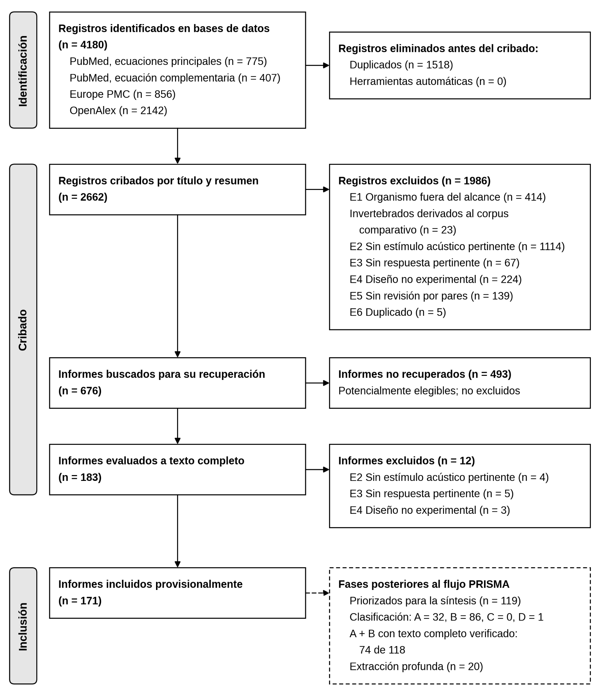

Documentos del trabajo
Leer el artículo y la presentación
- Descargar artículo completo (Word, DOCX · 808 KB)
- Descargar presentación (PowerPoint, PPTX · 902 KB)
Son los archivos originales del trabajo académico. Incluyen el desarrollo, las figuras y las referencias bibliográficas.
01 / Pregunta de investigación
Del sonido a la respuesta del pez
¿Cómo se relacionan las características del campo acústico y la biología sensorial de los peces con sus respuestas conductuales, y qué evidencia respalda posibles aplicaciones en manejo y conservación?
Aunque esta línea del portafolio se llama «Organismos acuáticos y sonido», la síntesis de este trabajo se centra en peces. Sus conclusiones no se extienden a todos los organismos acuáticos.
02 / Metodología
Revisión sistemática con síntesis narrativa
El artículo presenta el proceso siguiendo PRISMA 2020. Las búsquedas se realizaron en PubMed, Europe PMC y OpenAlex los días 23 y 24 de septiembre de 2026.
- Identificación y cribado: 4180 registros identificados; tras retirar 1518 duplicados, se examinaron 2662 registros.
- Recuperación: se buscaron 676 textos completos. No se recuperaron 493; se evaluaron 183, se excluyeron 12 y se incluyeron provisionalmente 171 informes.
- Priorización: de 119 informes priorizados, 118 resultaron pertinentes. Se verificó el texto completo de 74; los otros 44 solo contaban con resumen.
- Síntesis: se seleccionaron intencionalmente 20 informes para extracción en profundidad entre los 74 con texto completo. Esta selección sustenta la síntesis detallada.
Los 118 informes pertinentes no equivalen a 118 análisis en profundidad. La heterogeneidad de los experimentos y las limitaciones de los datos impidieron realizar un metaanálisis: no se calculó un efecto combinado.

03 / Hallazgos de la revisión
La respuesta depende de la especie y del contexto
- Describir el estímulo importa. La revisión distingue presión acústica y movimiento de partículas. Medir únicamente el nivel de presión sonora puede ser insuficiente para interpretar lo que percibe un pez.
- Detectar un sonido no implica una conducta concreta. Una respuesta del sistema auditivo no demuestra por sí sola atracción, evasión o cambios de actividad.
- Las respuestas varían. Los estudios revisados incluyen atracción de juveniles hacia paisajes sonoros de arrecife, ausencia de preferencia direccional en pez león y atenuación de la evasión en carpas al repetir la exposición.
- La aplicación requiere más evidencia. Una respuesta experimental no demuestra automáticamente la eficacia de un dispositivo de manejo o la restauración de un ecosistema.
La conclusión del trabajo es que las respuestas surgen de la interacción entre el campo acústico, el sistema sensorial y el contexto. La revisión no identifica una frecuencia universal para controlar la conducta de los peces.
04 / Alcance y limitaciones
Cómo interpretar estos resultados
La falta de acceso a 493 textos completos puede introducir sesgos. No se consultaron Scopus ni Web of Science, y la extracción profunda se limitó a una selección intencional de 20 informes, que no constituye una muestra estadísticamente representativa.
El protocolo no se registró públicamente. No hubo doble cribado independiente ni una evaluación estandarizada del riesgo de sesgo. Las diferencias entre especies, estímulos y diseños limitan las comparaciones y las generalizaciones.
Transparencia sobre el proceso: según la declaración del artículo, la búsqueda, el cribado, la extracción y la redacción contaron con apoyo de asistentes de inteligencia artificial bajo supervisión del autor, quien asume la responsabilidad del contenido.
05 / Créditos
Trabajo académico universitario
Autor: Cristian Rafael Huamani Arroyo.
Facultad: Oceanografía, Pesquería, Ciencias Alimentarias y Acuicultura.
Curso: Acústica Submarina.
Docente: Dr. Federico Iriarte Ahon.
Título del artículo: Campo acústico submarino, percepción y respuestas conductuales en peces: revisión sistemática con síntesis narrativa de evidencia experimental y sus implicaciones para el manejo y la conservación.
Artículo: . Presentación: .
Esta página resume el material entregado por el autor.